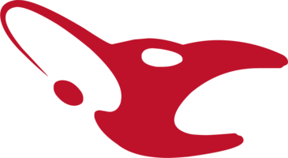

MOUZ
Histórico do time
Fundada em março de 2002, a mousesports é uma das organizações mais antigas e tradicionais do Counter-Strike, tendo sido uma das equipes fundadoras da associação G7 Teams. Ao longo de quase duas décadas, o time acumulou mais de 360 títulos com a mesma identidade visual, antes de passar por uma reformulação completa de marca em outubro de 2021, quando adotou o nome curto MOUZ. Atualmente sediada em Hamburgo, a organização mantém presença forte em CS2, além de disputar outros títulos como Valorant e Rainbow Six Siege.
Design da logo
O antigo emblema da mousesports remetia à cabeça de um mouse e, ao mesmo tempo, à palma de uma mão sobre o dispositivo — um duplo significado que, com o tempo, poucos fãs conseguiam decifrar. Na reformulação de 2021, a agência EIGA criou um novo distintivo em formato de coração, combinando o rosto de um mouse com a letra "M", simbolizando a paixão dos jogadores e da comunidade. O vermelho, cor que representa a marca desde 2002, foi mantido como elemento central da nova identidade.
Linha do tempo das logos
-
2002 - 2021

A logo original da mousesports, usada por quase 20 anos e responsável por mais de 360 títulos conquistados pela organização.
-
2021 - Atual

O novo distintivo em formato de coração, unindo o rosto de um mouse à letra "M", marcou a transição de mousesports para MOUZ.